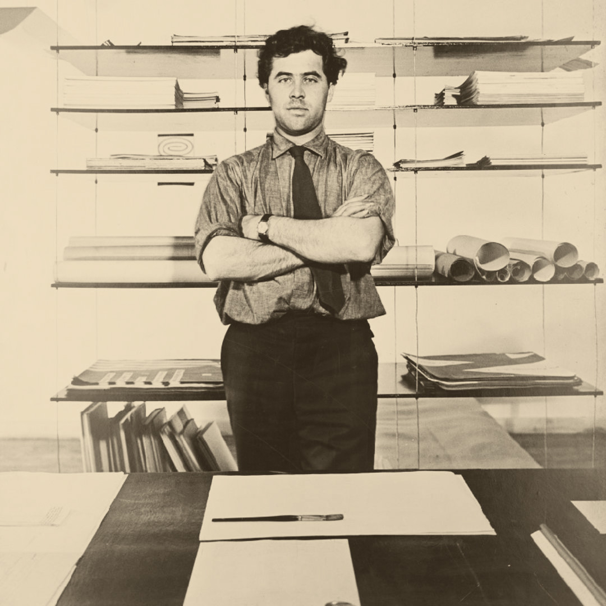

Otl Aicher was born on May 13, 1922, in Ulm, Germany, and grew up during the Nazi era. Strongly opposed to the Nazis, he refused to join the Hitler Youth, which led to his arrest and prevented him from passing his college entrance exams. In 1941, he was drafted into the German army during World War II, but in 1945, he deserted and went into hiding, refusing to support a regime he opposed.
After the war, Aicher turned to art. In 1946, he studied sculpture at the Academy of Fine Arts in Munich, and the following year, he opened his own design studio. In 1952, he married Inge Scholl, whose younger siblings, Hans and Sophie Scholl, had been members of the White Rose, a student resistance group against the Nazis. Both Hans and Sophie were executed for their involvement, a loss that deeply affected Aicher and influenced his dedication to creating socially responsible design.
In his later life, Aicher became a prominent figure in graphic design, co-founding the Ulm School of Design (Hochschule für Gestaltung) in 1953, which became known for its modern and functional approach to design. He is best known for his work on the branding and visual identity of the 1972 Munich Olympics, where he introduced iconic pictograms to represent different sports, creating a visual language that was simple, clear, and universally understood. His work continued to inspire designers around the world, and he remained active in design until his death in 1991. Aicher's legacy lives on in his approach to design as a powerful tool for communication and social change.